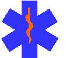

221 Penn Avenue, Suite 2500
Pittsburgh,
PA 15221-2166
412/242-7322
Fax:
412/242-7434
info@emsi04.org
EMSI CharterEmergency Medical Service Institute (EMSI) is a chartered, nonprofit corporation which provides technical and financial assistance to the development of a coordinated emergency medical services system primarily throughout the 10-county region of southwestern Pennsylvania. The mission of EMSI is to promote a reduction in morbidity and mortality in the prehospital care setting in this 10-county region. This will be accomplished by:
Membership in the Institute is open to representatives of local governments and EMS-affiliated agencies, as well as other organizations and individuals holding a special interest in EMS. TrainingDuring the 2000-2001 program year, the following number of persons in the region were trained through 139 courses:
During the fiscal year, 1,262 persons received initial certification, and 57 persons were recertified by examination. Persons trained by level listed in the EMSI registry include:
During the fiscal year, 1,046 persons were recertified through continuing education. EMSI registered 2,927 continuing education courses. EMS Update 2001, the Institute's annual conference, was held March 15 through 17 at Seven Springs Mountain Resort. There were 39 exhibitors and 700 attendees. Through the Emergency Medical Services Operating Fund (EMSOF), the Institute allocated $103,262 for the purchase of training equipment, $35,484 for the payment of instructor costs, $74,376 for training institute administration, and $61,075 to support county EMS coordinator positions. Four issues of EMSI Intercom were published. AccreditationEleven training institutes were re-accredited in the region. There are 39 medical command facilities accredited by the Department of Health. Of the 479 medical command physicians in EMSI's registry, 253 are board certified in emergency medicine. There are 25 medical command facility medical directors board certified in emergency medicine. Fourteen complaints were investigated in a manner consistent with Department of Health policy. Quality AssuranceIn the region, there were 419,229 ambulance runs during the year. There were 377,306 ambulance calls responded to within 10 minutes of the time of dispatch, including 19,206 life-threatening responses; 111,924 moderate responses; and 189,876 minor responses. Ninety percent of the time, EMS personnel were enroute in 5 minutes or less. By level of care on scene, 27,219 patient conditions were improved after EMS intervention, 253,708 were stable, 11,427 were unstable and 1,564 were worse. Patient care record data was collected from ambulance services/QRS providers and processed. A CD-ROM containing approximately 336,724 patient care records was submitted to the Department of Health. There are 37 ambulance services submitting patient care records electronically. EMS providers were sent quarterly reports regarding patient care records. Monthly error reports were mailed. CommunicationsOne hundred percent of the population has access to EMS by dialing 911. In the region, 97 percent of the population resides within a 10-minute response time. Provider EquipmentUsing money from the Emergency Medical Services Operating Fund, the Institute allocated $355,033 to 102 EMS providers for the purchase of essential equipment. LicensureDuring the year, one BLS ambulance, one ALS ambulance, and six QRS were licensed initially. Six Voluntary Rescue Service Recognitions were completed. Eight BLS ambulances, fifteen ALS ambulance services and six QRSs were relicensed. There are 179 ambulance services licensed in the region, including:
There are 667 emergency medical vehicles in the region. In the region, 56 ambulance services, 59 QRSs, 100 Police Departments, 119 Fire Departments and 77 additional public entities have AED capabilities. Program ActivitiesThe Institute's Board of Directors held four meetings. Six meetings were held with the county EMS coordinators. EMSI's regional Medical Direction Committee held three meetings. Regional Hospital Diversion Committee finalized the Hospital ED Condition Status procedures. Staff provided updates to regional stakeholders on the new Rules and Regulations promulgated by the Department of Health. The Institute's membership held a meeting November 3, 2000. A financial audit of the 1999-20 fiscal year was completed and submitted to the Department of Health. One research study was approved by EMSI's Medical Direction Committee and the Pennsylvania Department of Health. EMSI conducted one PEPP program and a program related to the Wilkinsburg Mass Casualty Incident. Virgil Casini of Point Marion VFD Ambulance received the EMS Provider of the Year Award at EMS Update 2001. Staff actively participated on committees established by the Pennsylvania Emergency Health Services Council, the Pennsylvania Department of Health, the American Heart Association, SAVE-A-LIFE SATURDAY Committee, Region 13 Task Force, Operation Heartbeat, Pennsylvania Turnpike Commission, County EMS Councils and other organizations. Promotional kits for 2001 EMS Week were distributed to ambulance services and others in the region. Participation continued in the Department of Transportation Fatal Accident Reporting System. Two social events were sponsored: an EMS outing at Kennywood Park and an evening at a Pittsburgh Pirates baseball game. |
Home | Conference Info | Course Schedule | Links | About EMSI
All material Copyright © 2002 Emergency Medical Service Institute